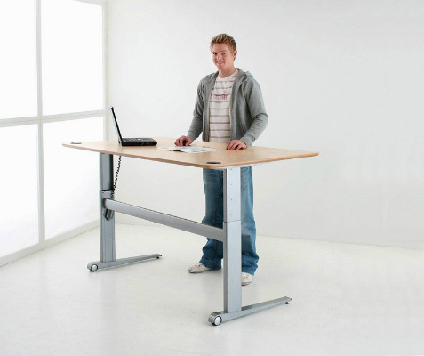

Здравствуйте! У нас есть большая проблема: на последних уроках (5-й, 6-й час) ученики буквально "выключаются" и засыпают. Традиционные методы и замечания не помогают.
Айбийке, 10 класс
Хотела бы предложить установить в конце класса высоких стола, за которыми можно стоять. Если ученик чувствует, что засыпает, он может встать и перейти за такой стол на 10-15 минут. Когда стоишь кровь циркулирует быстрее, и мозг просыпается. Это помогает взбодриться
Хотела бы предложить установить в конце класса высоких стола, за которыми можно стоять. Если ученик чувствует, что засыпает, он может встать и перейти за такой стол на 10-15 минут. Когда стоишь кровь циркулирует быстрее, и мозг просыпается. Это помогает взбодриться
